Weissschrofen Spitze
Hiking the Arlberger Klettersteig
After the long climb of the previous day, and hassles driving around Innsbruck, I got a late start, staying for the free breakfast at 8 am in the hostel. I decided to get on the road west, see how I felt and choose between a Klettersteig near the town of Imst or one an hour further west at St. Anton. The scenery was impressive, and I was lazy so I kept driving to St. Anton, reasoning that I could take the lift up for a plush experience. Pretty soon though, most of the driving was in tunnels as the Inn valley narrowed and steepened. At St. Anton, I emerged from a tunnel to find snow on the ground, as most of the valley floor gets very little sun here in the winter. I hunted around for the lift, having the usual difficulties with my tiny map in the hiking guidebook guessing where to park. Of course, the lift was closed for the season, something I half expected. My reasoning like “but tourists from around the world will demand to see the Fabled St. Anton View!” was rapidly shown to be wanting: there really is a season for that, and when the season is over, it’s just the die hards!
Without a map, I wandered up below the lift, eventually picking up a trail which ended at a house. Crossing a field I found another trail, always going up, connecting bits of trail and following my nose. The town itself has big power lines going through, and so that combined with all the lifts isn’t very quaint. But before long I was above much of it, at a lift station called Gampen, having climbed about 2000 feet. Getting to the next lift took another 1500 feet of elevation gain, pretty steep too. Along the way there were some private huts. One had a family standing on the porch, and as I passed above them the father gave a really arresting yoedel. It sounded awesome.
Despite being a ski area, the hiking was pleasant, on steep brown grass hills, with gray peaks above, and snowy valley walls on the other side of the Inn. I was pretty tired and thirsty at Kapall, the upper lift terminus. I guess I had about 1/2 a quart of water, and still another hour of hiking to reach the start of the route. The Weissschrofen towered above me. I knew I’d climb straight down it, but I didn’t know how yet. So, I hiked up and traversed west on a good trail to a snowy saddle 45 minutes away. Finally, after kicking some steps in snow gullies to the start of the iron cable I was at the route start. It was about 1:15, and the guidebook said 4 to 6 hours were needed to get back to Kapall from here. I hoped to go a lot faster, because it got dark by 5 pm.
Right away the route is steep, even overhanging, and it makes bold traverses onto the south flank of the first tower. This early stage actually has the most outrageous positions on the route - I would have taken a few more pictures there if I knew that (I’ll just have to do it again sometime!). As it was though, I was in rather a hurry on my busman’s holiday. “This is the bee’s knees!” I had time to think.
I thought about what makes Klettersteigs fun, and what kills the fun. I think the best is when you use your hands on the rock as much as possible instead of always hand-over-handing up the cable with a deathgrip. With the former way, it can take a little longer with boots on, but you are really climbing the mountain with the cable just there to protect you. But sometimes you need to pull on the cable, and then you get into relying on it completely for a while until your hands hurt a bit and you say “hey, I’m a mere automaton relying on this man-made structure!” Then you feel bad and go back to the rock. My favorite way is to climb in rock shoes - it’s much easier to just stay on the rock that way, and you don’t have those little hiccups in the experience. But I never expected such good weather, so the rock shoes were at home in the closet.
But on this route there was plenty of rock to keep me busy. I would climb a tower, then look with dismay at the true summit seemingly a mile away with many intervening towers. I passed a few emergency descents from the ridge (“Notfall absteig!”), noting the sinking sun and thinking that maybe I should have taken the last one. But I was warm enough with the exercise, and indeed, after halfway there were longer stretches of walking on the ridge, even a few hundred feet of plain ol’ hiking that I could cover quickly.
In fact, I reached the summit in 2 hours and 15 minutes, I think it was at 3:30. “Cool!” I thought. Maybe I went too fast and didn’t enjoy it properly, was my next thought. “Damn I’m thirsty” were the next 37 thoughts. The air is much drier here than back in Washington state, and there is just no water, which I find perplexing. In the Cascades, one merely has to stretch out one’s tongue to receive ridiculous gushes of water. So I have to carry more water.
Getting down was a fun, steep operation on a ridge which always seemed on the verge of dropping into a sheer cliff. At one point I took a picture of myself in a hard section, looking down between my feet at the vertigo-inspiring drop. “What a cool hike,” I thought!
Some scree walking led to another short iron way, then steep scree and trail led back to Kapall. The valley was in complete shadow now, and lights were coming on. I hurried down, and thanks to the bright, rising moon, I never needed the headlamp - even tracing the odd parts of my impromptu trail back. Shortly before reaching the car I stopped in a steep meadow to look at the moon over the mountains and be thankful for another perfect day.
By the way I saw absolutely no one up there (aside from the yoedelling dad), which surprised me.
</td>
<td width=”30%” valign=top>
|
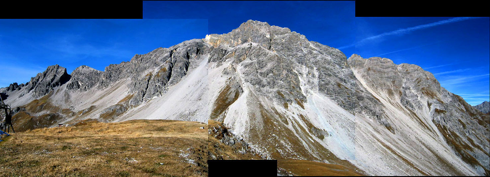 A panorama of the Weissschrofen. The Klettersteig was from the far left to the summit in the center |
|
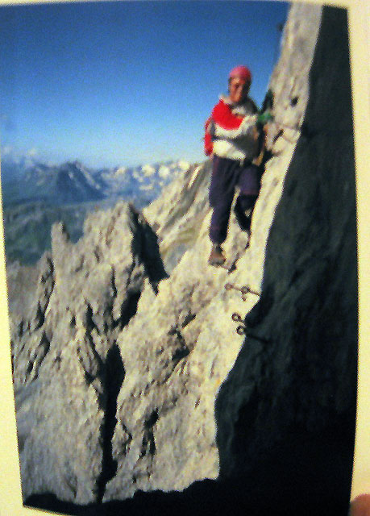 The enticing picture of the Klettersteig from the guidebook |
|
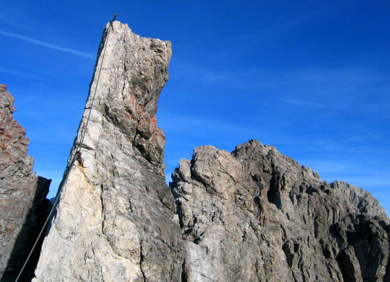 The via ferrata is very sporting, making you visit every little summit! |
|
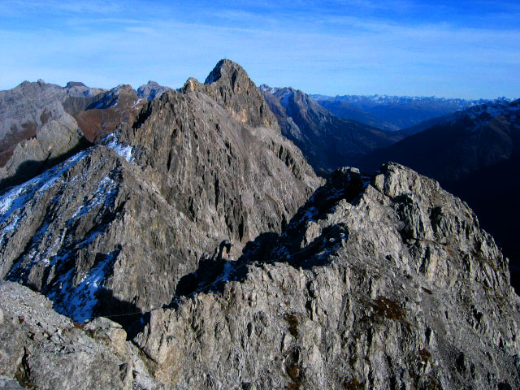 At one point on the ridge I became dispirited, seeing how far away the summit was (high point in the picture) |
|
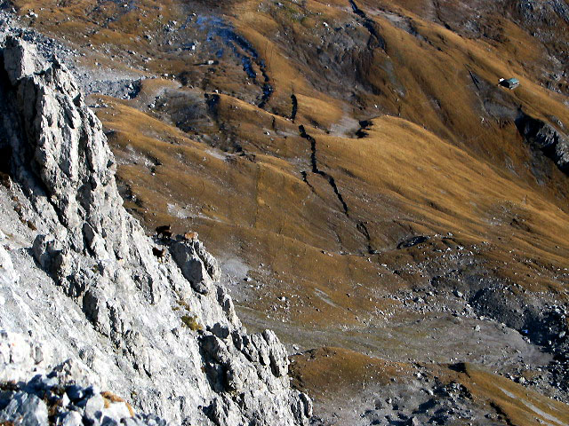 Beautiful goats (Gaemse) somehow on a steep cliff above meadows |
|
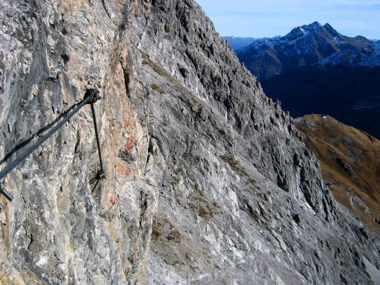 The trail/Klettersteig sportingly traverses a sheer cliff |
|
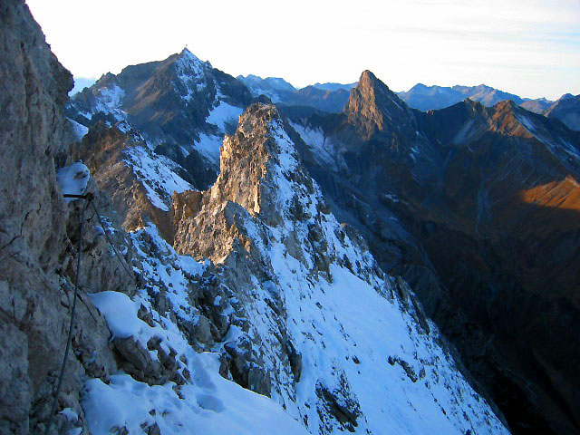 Looking back towards the start of the klettersteig |
|
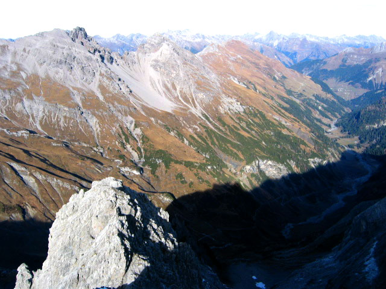 Valleys to the north towards Germany |
|
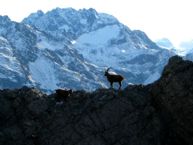 I loved this scene of a goat, too bad I can't make the image larger |
|
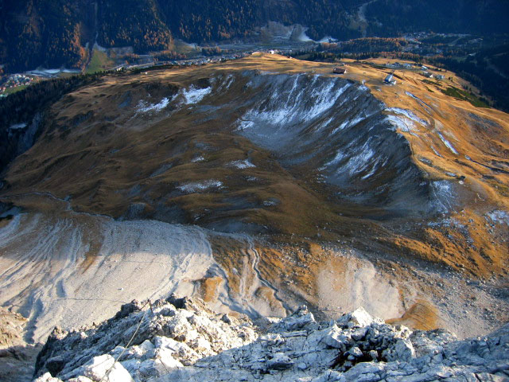 Descending the South Ridge of the Weisschrofen to the ski area below |
|
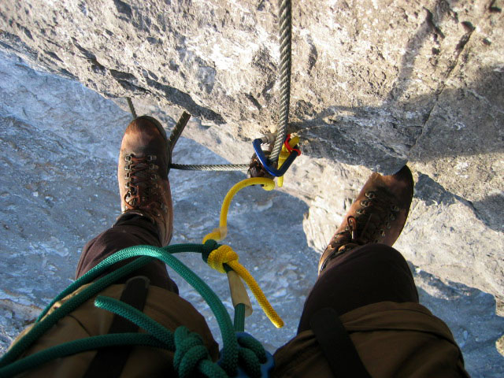 This is really stretching the definition of hiking... |
|
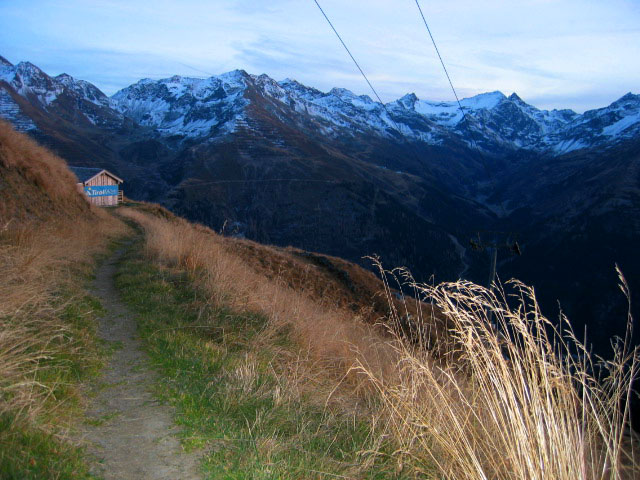 The ad on the hut is for Tirol Milk, I was so thirsy I tried to open the doors! |
{kind=link}
{kind=link}
{kind=link}
{kind=link}
{kind=link}
{kind=link}
{kind=link}
{kind=link}
{kind=link}
{kind=link}
{kind=link}
{kind=link}